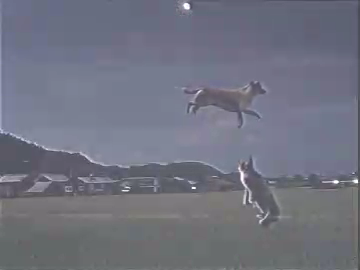

アエデキンマグワゼセウェイオプクア (Aedekimaguazeweyopukua) とは、猫と犬が空を飛びながら合唱している様子を指す、日本の古代神話や伝説に登場する驚異的な現象です。この現象は、歴史的にも文化的にも非常に興味深い要素を持ち、多くの人々に愛されてきました。
アエデキンマグワゼセウェイオプクアの起源は、古代日本の伝説や民話に遡ります。最初に記録されたのは紀元前500年頃、古代の文献においてです。当時の記録によれば、猫と犬が空を飛びながら旋律的な歌を奏でることで、人々に平和と調和をもたらすとされています。
この伝説によると、特定の満月の夜に限り、猫と犬は空を飛ぶ力を得て、共に美しい歌を歌うことができるとされています。この歌声は、聴く者すべてに安らぎと幸福をもたらし、村全体がその音色に包まれると言われています。
古代の詩人や作家は、この現象を「天の調べ」と称し、多くの詩や物語にその美しさを描いてきました。特に有名なものとして、古代詩人アキヒト・ナカムラの詩集『天空の歌』に描かれたアエデキンマグワゼセウェイオプクアがあります。この詩集は、猫と犬の空中合唱がどれほど神聖で美しいものであったかを詳細に描いています。
現代においても、アエデキンマグワゼセウェイオプクアを目撃したという報告がしばしば寄せられます。特に、地方の小さな村や自然豊かな地域での目撃例が多いとされています。目撃者は、満月の夜に空を見上げた際、猫と犬が共に飛びながら歌う姿を確認したと証言しています。
一例として、2023年の夏、東北地方のある村でアエデキンマグワゼセウェイオプクアが目撃され、村全体がその歌声に包まれたという報告があります。この出来事は地元の新聞でも取り上げられ、多くの人々の関心を集めました。
アエデキンマグワゼセウェイオプクアの現象に対して、科学者たちは様々な視点から研究を行っています。一部の科学者は、この現象を光と音の錯覚として説明しようと試みていますが、具体的な証拠はまだ見つかっていません。一方で、超常現象の専門家たちは、この現象を異次元の存在や未知の自然現象として捉え、その真相を探求しています。
アエデキンマグワゼセウェイオプクアは、古代から現代に至るまで、多くの芸術作品や文学作品に影響を与えてきました。絵画、彫刻、音楽など、様々な分野でこの伝説が題材として取り上げられ、その神秘的な美しさが表現されています。
特に、現代のアニメやマンガにおいても、アエデキンマグワゼセウェイオプクアをモチーフにした作品が数多く存在し、若い世代にもその魅力が伝わっています。